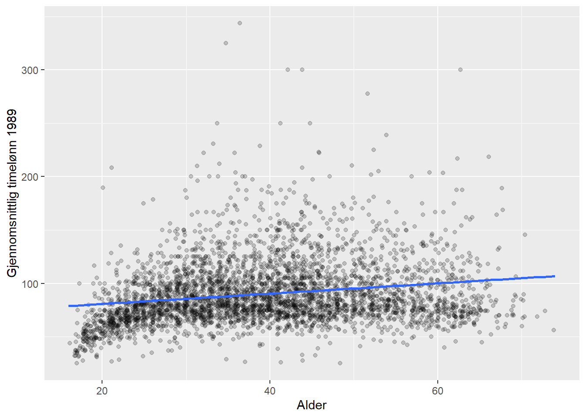
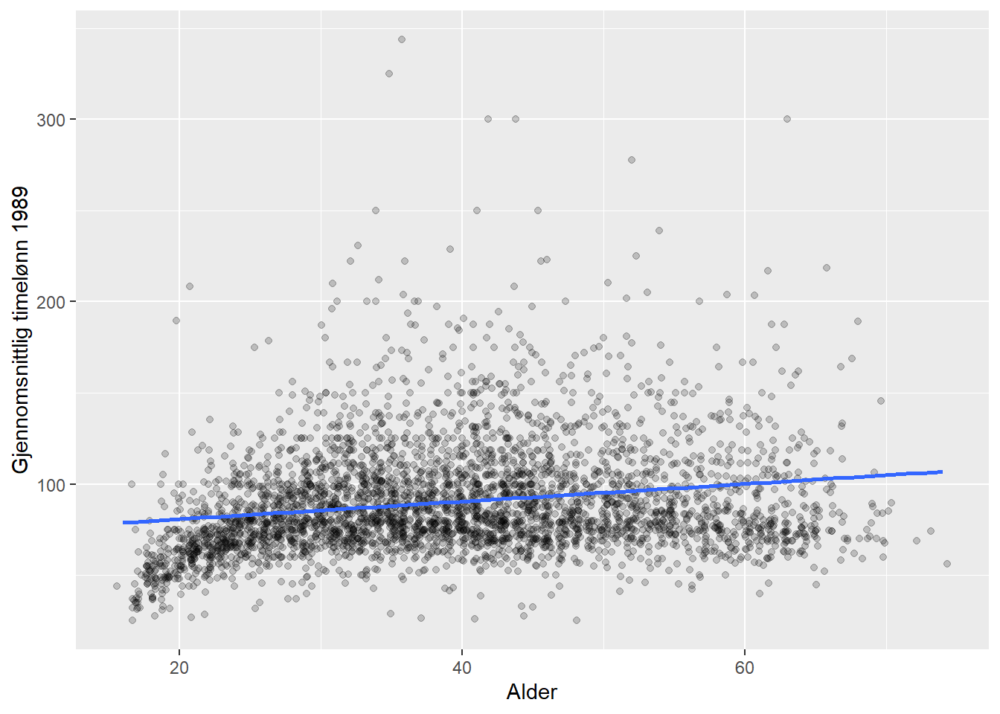
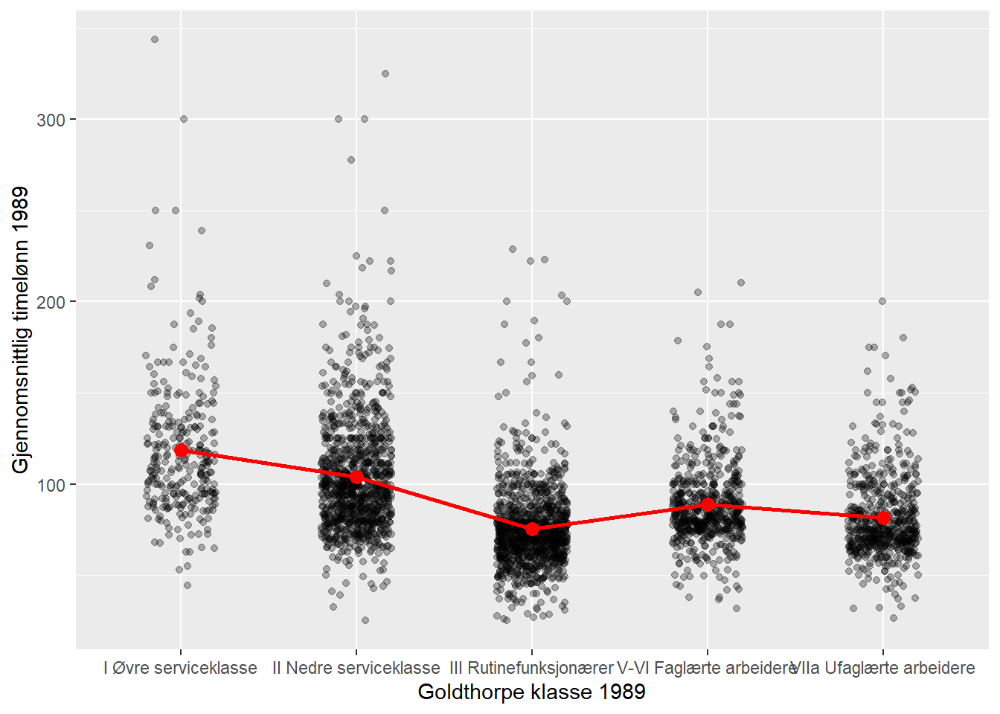
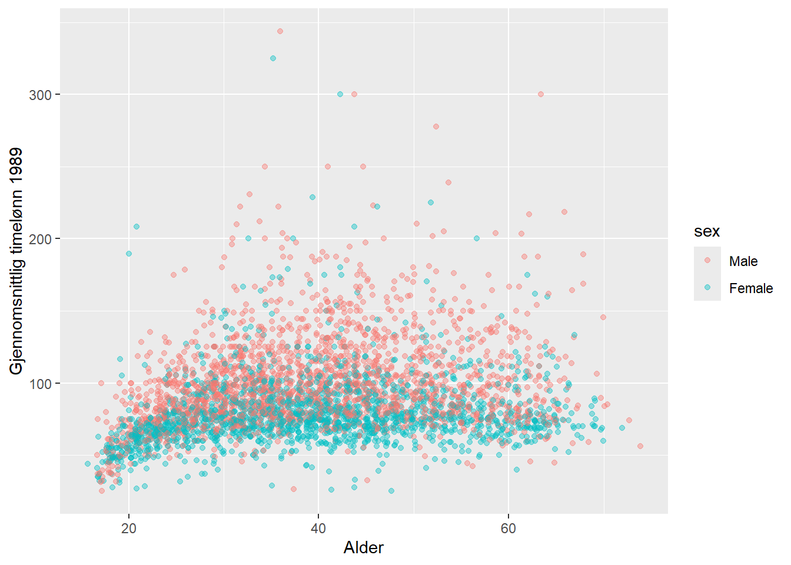

library(tidyverse)
library(gtsummary)
library(modelsummary)9 Regresjon: Sammenheng mellom variable
Vi skal her se på helt grunnleggende lineær regresjon med en og to forklaringsvariable.
9.1 Scatterplot
Bivariat regresjon beskriver sammenhengen mellom to variable. En naturlig start er å se på et scatterplot. Her er en figur som viser hvordan timelønn varierer med alder. I det nedenforstående er det brukt jitter og gjennomsiktig farge for å håndtere overplotting.
I tillegg er det tegnet inn en linje som illustrerer trenden i gjennomsnittlig lønn med alder. Denne linjen skrår svakt oppover, som altså betyr at gjennomsnittlig lønn øker noe med alder. Vi ser med det blotte øyet at en rett linje ikke beskriver denne sammenhengen perfekt. Først og fremst er det en stor variasjon rundt denne linjen, så det er mye annet som påvirker lønna enn alder. Det er også verd å legge merke til at i de yngste aldersgruppene er lønna en god del lavere - og kanskje litt lavere i eldste aldersgrupper også. Så en rett linje er kanskje ikke optimalt i utgangspunktet. Fordelen med en rett linje er at vi kan si noe slikt som at “gjennosmsnittslønna øker med x antall kroner for hvert år eldre man blir”. Hvis linja er kurvlineær blir det litt mer komplisert. Så et første poeng er at en slik linje er en forenkling, og det er en tilsiktet forenkling.
ggplot(abu89, aes(x =age, y = time89))+
geom_jitter(alpha = .2)+
geom_smooth(method = "lm", se = FALSE)
Det er en viss tendens til at lønnen øker med alder, men det er ikke helt lett å si hvor mye. Poenget med lineær regresjon er å beskrive en gjennomsnittlig trend.
ggplot(abu89, aes(x =age, y = time89))+
geom_jitter(alpha = .2)+
geom_smooth(method = "lm", se = FALSE)
Denne trendlinja er hva vi vanligvis kaller regresjonslinje.
9.2 Regresjonslinja
Regresjonslinja kan beskrives med et stigningstall, som sier hvor bratt linjen er. Substansielt sett betyr det hvor mye utfallsvariabelen (y-aksen) endres med økning i forklaringsvariabelen (x-aksen). I tillegg trenger vi også vite hvor høyt/lavt linjen ligger.1 Til det bruker vi startpunktet for linjen, der hvor \(x\) har verdien 0. Dette må regnes ut, og det er akkurat dette estimering av lineær regresjon gir oss.
Utregningen av regresjonslinja går vi ikke inn på her, men intuitivt sett ønsker vi jo den beste linja og ikke en hvilken som helst omtrentlig linje. Datapunktene (de svarte punktene i grafen) er spredt rundt linja, og avstanden mellom linje og punkt kalles residualer. Summen av disse residualene er grunnlaget for mål på hvor godt regresjonslinja beskriver de faktiske dataene. Den beste linja er definert som den som minimerer residualene. Det er dette som kalles “minste kvadraters metode”.
I R estimeres regresjonsmodeller med funksjonen lm. Første argument er en formel på formen utfallsvariabel ~ forklaringsvariabel. Rekkefølgen variablene oppgis i er altså viktig. Dernest må det spesifiseres hvilket datasett som skal brukes med data = .2
Legg alltid resultatene i et eget objekt med et navnt som er rimelig enkelt å forstå hva er. I følgende kode legges resultatet i en nytt objekt lm_est1. Deretter bruker kan man hente ut de delene av resultatet vi er interessert i. I aller første omgang er bare interessert i regresjonslinjas konstantledd (startpunktet) og stigningstall. Disse kaller vi vanligvis regresjonskoeffisienter. Det kan vi få ut ved å bruke funksjonen coef. (Vi kommer tilbake til å se på de fulle resultatene senere, som vi oftest er interessert i).
lm_est1 <- lm(time89 ~ age, data = abu89)
coef(lm_est1)(Intercept) age
71.1101883 0.4828415 Regresjonslingningen kan skrives på formel der \(\alpha\) er konstantleddet og \(\beta\) er stigningstallet slik:
\[ \operatorname{time89} = \alpha + \beta_{1}(\operatorname{age}) + \epsilon \]
Når vi setter inn de estimerte koeffisientene inn i ligningen får vi følgende:
\[ \operatorname{\widehat{time89}} = 71.11 + 0.48(\operatorname{age}) \]
Tolkningen her er at gjennomsnittlig forskjell i timelønn mellom grupper der aldersforskjellen er ett år er 0.48 kroner i favør av den eldre gruppen.3 Merk enheten her: stigningstallet tolkes på den skalaen utfallsvariabelen er på, i dette tilfellet kroner. Det er også uttrykt endring ved at forklaringsvariabelen endres med nøyaktig 1.
Vi sier gjerne at regresjonslinjen er estimert, og det innebærer at det er usikkerhet i estimatene. Vi kommer tilbake til dette, men en vanligere output fra regresjonsmodeller er å bruke funksjonen summary. Da får man med mye mer detaljer og output vil se ut som følger:
summary(lm_est1)
Call:
lm(formula = time89 ~ age, data = abu89)
Residuals:
Min 1Q Median 3Q Max
-69.287 -19.131 -6.304 12.864 255.258
Coefficients:
Estimate Std. Error t value Pr(>|t|)
(Intercept) 71.11019 1.62232 43.83 <2e-16 ***
age 0.48284 0.03926 12.30 <2e-16 ***
---
Signif. codes: 0 '***' 0.001 '**' 0.01 '*' 0.05 '.' 0.1 ' ' 1
Residual standard error: 29.73 on 3757 degrees of freedom
(368 observations deleted due to missingness)
Multiple R-squared: 0.0387, Adjusted R-squared: 0.03844
F-statistic: 151.2 on 1 and 3757 DF, p-value: < 2.2e-169.3 Dummy-variable
Hvis en forklaringsvariabel har kun to verdier vil vi typisk gi den ene kategorien verdien 0 og den andre kategorien 1. Dette kalles en «dummy variabel» eller en «indikator variabel». For eksempel vil et datasett ofte ha en variabel for kjønn med verdiene «Mann» og «Kvinne». Da kan vi la mann få verdien 0 og kvinne verdien 1. Ofte vil man da gi variabelen et navn som indikerer hvilken verdi som er 1. Så i dette eksempelet er det hensiktsmessig å gi den nye variabelen navnet «Kvinne». I dette eksempelet vil man også kunne si at variabelen er en «dummy for kvinne» (altså: den kategorien som får verdien 1).
Det spiller ingen rolle hvilken kategori som får verdien 0 og 1. I dette eksempelet kunne man like gjerne gjort det motsatt, og latt det være en «dummy for mann». Da ville det være naturlig å kalle variabelen «mann» i stedet for «kvinne». Som vi skal se nedenfor vil det bare påvirke fortegnet når vi bruker variabelen i en regresjonsanalyse.
I datasettet abu89 er variabelen “female” en slik variabel som har verdiene 0 eller 1, og der 0 betyr “mann” og 1 betyr “kvinne”.
| Kjønn | Female |
|---|---|
| Mann | 0 |
| Kvinne | 1 |
| Kvinne | 1 |
| Mann | 0 |
| Kvinne | 1 |
| Kvinne | 1 |
| Kvinne | 1 |
| Mann | 0 |
I R vil vi ofte ha slike variable som factor-variable. Da er variabelen definert som kategorisk og selv om det er tekst-verdier i variabelen, så vil R automatisk behandle den som om verdiene var 0 og 1 i estimeringen av regresjonsmodellen.
theme_gtsummary_mean_sd()
abu89 %>%
select(female, time89) %>%
tbl_summary(by = female) | Characteristic | 0 N = 2,1931 |
1 N = 1,9341 |
|---|---|---|
| Gjennomsnittlig timelønn 1989 | 100 (32) | 79 (24) |
| Unknown | 190 | 178 |
| 1 Mean (SD) | ||
Vi ser altså at menn hadde i gjennomsnitt høyere timelønn enn kvinner, nærmere bestemt 21 kroner mer. Dette kan vi også undersøke med lineær regresjon som følger:
lm_est_i <- lm(time89 ~ female , data = abu89)
coef(lm_est_i)(Intercept) female
99.84382 -20.75229 Regresjonskoeffisenten for variabelen female uttrykker nettopp differansen mellom menn og kvinner, som er 21 kroner. Husk at \(\beta\) er hvor mye \(y\)-variabelen endres når man sammenligner \(x\)-variabelen med akkurat 1 enhets forskjell. Her er mann 0 og kvinner 1, så da er dette faktisk 1 enhets forskjell. Altså: når \(x\) går fra 0 til 1, så reduseres \(y\) med 21. Derfor negativt fortegn.
I R vil vi ofte gjøre om kategoriske variable til såkalte factor-variable. En factor-variabel vil håndtere kategoriske variable som tekst, men med en underliggende numerisk verdi. Da kan man bruke factor-variable i alle standard analysemetoder. I regresjon vil R automatisk bruke den første kategorien som referansekategori.
Vi kan gjøre den samme analysen med kjønn som en factor variabel og få de samme resultatene som ovenefor.
abu89 <- abu89 %>%
mutate(sex = factor(ifelse(female == 1, "Female", "Male"), levels = c("Male", "Female"))) %>%
filter(!is.na(time89))
lm_est2 <- lm(time89 ~ female , data = abu89)
coef(lm_est2)(Intercept) female
99.84382 -20.75229 9.3.1 Dummy-variable med mer enn en kategori
Noen ganger har vi forklaringsvariable med flere enn to kategorier. Det kan vi løse på en tilsvarende måte ved å lage flere dummy-variable. Et eksempel kan være sosial klasse. I datasettet abu89 er det fem kategorier.
En dummy-variabel har bare to kategorier: 0 og 1, men vi kan lage flere dummy-variable. Vi kan lager en ny variabel «klasse II» som har verdien 1 hvis personen tilhører denne klassen og 0 ellers. Altså en dummy. Så kan vi lage en ny variabel «Klasse III» som har verdien 1 hvis personen tilhører denne klassen og 0 ellers. Slik kan man lage en dummy-variabel for hver av kategoriene. Da har vi altså flere dummy-variable som til sammen fanger opp informasjonen i den opprinnelige variabelen.
| Utdanning | Klasse II | Klasse III | Klasse V-VI | Klasse VII |
|---|---|---|---|---|
| Klasse I | 0 | 0 | 0 | 0 |
| Klasse II | 1 | 0 | 0 | 0 |
| Klasse III | 0 | 1 | 0 | 0 |
| Klasse V-VI | 0 | 0 | 1 | 0 |
| Klasse VII | 0 | 0 | 0 | 1 |
Merk at her er det ingen dummy for “Klasse I”. Denne gruppen brukes som referansekategori slik at estimatene for de andre dummyene blir tolkbare som forskjellen til denne referansekategorien. Mer om det siden, men man kan velge å bruke en annen referansekategori hvis man vil.
La oss først se på et plot. Her er det brukt en jitter-plot. Den røde linjen viser endring i gjennomsnitt mellom de kategoriene. En regresjonsanalyse vil gi slike estimater på differanser, men det er enklest hvis alle endringene er i forhold til samme referansekategori.
ggplot( abu89x, aes(x =klasse89, y = time89))+
geom_jitter(alpha = .3, width = .2)+
geom_point(aes(y=gr_snitt), col = "red", size = 3)+
#geom_hline(yintercept = mean(abu89x$time89, na.rm = TRUE))+
geom_line(aes(x = as.numeric(klasse89), y = smooth), col = "red", linewidth = 1) 
Den generelle regresjonsligningen skrives som \(y=a+bx\), der \(x\) er forklaringsvariabelen. Regresjonskoeffisienten, \(b\), tolkes som hvor forskjellen i gjennomsnittet på utfallsvariabelen, \(y\), mellom de som er en enhets forskjell på \(x\)-variabelen.
Så kan vi kjøre en regresjon og få ut regresjonskoeffisientene på samme måte som før. Akkurat her er coef lagt inn i en parentes for data.frame, men det er bare for at det skal bli en pen kolonne. Vi kommer altså tilbake til teknikker for penere output nedenfor.
est2 <- lm(time89 ~ klasse89, data = abu89)
data.frame(coef(est2)) coef.est2.
(Intercept) 118.39851
klasse89II Nedre serviceklasse -14.49078
klasse89III Rutinefunksjonærer -42.89842
klasse89V-VI Faglærte arbeidere -29.68788
klasse89VIIa Ufaglærte arbeidere -36.95234Hvert estimat for kategori for klasse sammenlignes med den første kategorien (altså den som mangler): klasse I. Det betyr at klasse VII (ufaglærte arbeidere) har en timelønn på -37 kroner mindre enn klasse I (øvre serviceklasse). Mens klasse II (nedre serviceklasse) tjener -14.5 kroner mindre enn klasse I.
Forskjellen mellom andre grupper er således differansen mellom disse estimatene. Altså: klasse VII tjener mindre enn klasse V-VI: \(36.9 - 29.7 = 7.2\) kroner. Se på plottet over, så ser du at disse tallene ser riktige ut.
9.4 Flere variable
Det er ikke så ofte vi bruker regresjon med bare en forklaringsvariabel, såklat “enkel lineær regresjon”.4 Langt mer vanlig er å bruke flere variable samtidig i det vi kaller “multippel regresjon”.5 I multippel regresjon kan man altså beskrive mer kompliserte mønstre i dataene.
Vi fortsetter med eksempelet om lønn og alder, men utvider med en dimensjon til, nemlig kjønn. La oss først se på kjønnsforskjellene i gjennomsnittlig timelønn.
abu89 <- abu89 %>%
mutate(sex = factor(ifelse(female == 1, "Female", "Male"), levels = c("Male", "Female"))) %>%
filter(!is.na(time89))
abu89 %>%
select(sex, time89) %>%
tbl_summary(by = sex) | Characteristic | Male N = 2,0031 |
Female N = 1,7561 |
|---|---|---|
| Gjennomsnittlig timelønn 1989 | 100 (32) | 79 (24) |
| 1 Mean (SD) | ||
Vi ser altså at menn hadde i gjennomsnitt høyere timelønn enn kvinner, nærmere bestemt 21 kroner mer. Dette kan vi også undersøke med lineær regresjon som følger:
lm_est2 <- lm(time89 ~ sex , data = abu89)
coef(lm_est2)(Intercept) sexFemale
99.84382 -20.75229 Det er altså slik at koeffisienten, \(\beta\), gir den samme differansen som en enkel sammenligning av to gjennomsnitt.
Vi har allerede sett på alder og lønn, så vi kan utvide dette til å inkludere kjønn samtidig i et scatterplot.
Grafisk er det da greit å bruke farger og slik vise for menn og kvinner for seg. I ggplot spesifiseres da group = sex og at fargene skal settes etter sammen grupperingen col = sex slik:
ggplot(abu89, aes(x = age, y = time89, group = sex, col = sex)) +
geom_jitter(alpha = .4)
lm_est3 <- lm(time89 ~ sex + age, data = abu89)
coef(lm_est3)(Intercept) sexFemale age
81.1014711 -20.6251051 0.4738042 9.4.1 Interaksjonsledd
Det kan tenkes at hvordan inntekten varierer med alder er forskjellig for menn og kvinner. I modellen ovenfor er det derimot antatt at denne er lik. Vi kan beskrive forskjellen i aldersgradienten i inntekt mellom menn og kvinner ved å inkludere interaksjonsledd (samspill) mellom kjønn og alder.
Dette gjør vi ved å spesifisere en regresjonslikning som følger:
\[ time89 = \alpha + \beta_{1}(age) + \beta_{2}(sex) + \beta_{3}(age \times sex) \] Eller med andre ord: timelønn varierer med alder og kjønn, og kombinasjonen av disse. Merk hvordan dette skrives i R:
lm_est4 <- lm(time89 ~ sex + age + sex * age, data = abu89)
coef(lm_est4) (Intercept) sexFemale age sexFemale:age
75.8535901 -9.9048054 0.6064699 -0.2719530 Merk nå at referansekategorien for kjønn er menn, så den estimerte koeffisienten er for kvinner. Det betyr at i utregningen får menn verdien 0 og kvinner får verdien 1. Sette man det inn i regresjonslikningen for menn blir det da som følger:
\[ time89 = \alpha + \beta_{1}(age) + \beta_{2}\times 0 + \beta_{3}(age \times 0) \] Siden alt som multipliseres med 0 blir 0 kan vi også skrive dette som:
\[ time89 = \alpha + \beta_{1}(age) \] For kvinner skal det derimot multipliseres med 1 og vi får:
\[ time89 = \alpha + \beta_{1}(age) + \beta_{2}\times 1 + \beta_{3}(age \times 1) \] Det som multipliseres med 1 endres jo ikke, så da kan det skrives som:
\[ time89 = \alpha + \beta_{1}(age) + \beta_{2} + \beta_{3}(age) \] Men siden vi har to termer for alder kan det forkortes til:
\[ time89 = \alpha + (\beta_{1} + \beta_{3})(age) + \beta_{2} \] Kortere sagt: forskjellen i stigningstallet mellom menn og kvinner er \(\beta_{3}\). I det empiriske eksempelet over betyr det at timelønn øker med alder for begge kjønn, men for kvinner øker det med 0.27 kroner mindre per år sammenlignet med menn. Eller sagt motsatt: menns lønn øker med 0.27 mer enn kvinner per år.
9.5 Prediksjon
Lineær regresjon kan også brukes til prediksjon selv om dette i liten grad er hva samfunnsvitere bruker regresjonsmodeller til. Vanligvis vil vi primært være interessert i å tolke regresjonskoeffisientene som sammenligninger mellom grupper. Man kan si at man da er opptatt av forklaringsvariablene. Når man predikerer er man derimot opptatt av utfallsvariabelen. Hvis man skulle være interessert i temaer som maskinlæring, vil dette være en god inngang til det.6
9.5.1 Regne ut forventet verdi
Merk at konstantleddet er tolkbart som forventet verdi på utfallsvariabelen når alle andre prediktorer er null. I eksempelet ovenfor med timelønn og klassetilhøringhet, er det altså ikke noen koeffisient for klasse I. Gjennomsnittlig timelønn i klasse I er når de andre dummyene er 0, altså 118.4 kroner. Gjennomsnittlig timelønn for klasse II er tilsvarende 118.4 + (-14.49) = 103.9.
Hvis du skulle gjette timelønna til en person uten å vite noe annet enn klasseposisjon ville det være fornuftig å gjette på gjennomsnittet for denne klassen. Så vi kan bruke regresjonsmodeller til å regne ut gjennomsnittslønn for gitte verdier av forklaringsvariable. I dette eksempelet er det kanskje litt i overkant komplisert da vi jo også bare kunne regnet ut gjennomsnittet per gruppe i en enkel tabell. Det ville faktisk gitt akkurat samme resultat. Det er mer nyttig med kontinuerlige variable og mer kompliserte modeller.
La oss se på regresjonsmodellen for hvordan timelønn varierer med alder i stedet. Alder er kontinuerlig, så det er få personer på hvert alderstrinn.
coef(lm_est1)(Intercept) age
71.1101883 0.4828415 Gjennomsnittlig timelønn ved 30 år vil da være 71.1 + 30 \(\times\) 0.5 = 86.1 kroner. Ved 35 år blir det tilsvarende 71.1 + 35 \(\times\) 0.5 = 88.6 kroner.
Dette kan vi altså regne ut for hånd, men man kan også bruke en r-funksjon, nemlig predict. Denne funksjonen tar som argument et regresjonsobjekt og en data.frame (altså et datasett eller tilsvarende struktur) med samme variabelnavn som ble brukt i opprinnelig regresjonsmodell.7
9.5.2 Predikere for kontinuerlig variabel
Koden nedenfor lager først et datasett med én variabel: alder med noen verdier man er interessert i utregning for. Så bruker man mutate til å lage en kolonne til med predikerte verdier.
nyedata <- data.frame(age = c(17, 20, 30, 40, 50, 60))
nyedata %>%
mutate(pred = predict(lm_est1, newdata = nyedata)) age pred
1 17 79.31849
2 20 80.76702
3 30 85.59543
4 40 90.42385
5 50 95.25226
6 60 100.080689.5.3 Predikere kategorisk variabel
Tilsvarende kan vi predikere for kategoriske variable slik som ble benyttet i regresjonsmodellen for klasse. I det nye datasettet spesifiseres f.eks. alle nivåene av en factor-variabel med funksjonen levels og predikerer for disse.
nyedata <- data.frame(klasse89 = levels(abu89$klasse89))
nyedata %>%
mutate(pred = predict(est2, newdata = nyedata)) klasse89 pred
1 I Øvre serviceklasse 118.39851
2 II Nedre serviceklasse 103.90773
3 III Rutinefunksjonærer 75.50009
4 V-VI Faglærte arbeidere 88.71063
5 VIIa Ufaglærte arbeidere 81.446189.5.4 Predikere for multippel regresjon
Nytten av predict-funksjonen kommer mer til sin rett ved mer kompliserte modeller. Her er et eksempel med flere variable:
Så kan vi regne ut estimert gjennomsnittlig verdi for de ulike kombinasjonene av utvalgte verdier som følger:
nyedata <- expand.grid(age = 30:35,
sex = c("Female", "Male"))
nyedata %>%
mutate(pred = predict(lm_est3, newdata = nyedata)) age sex pred
1 30 Female 74.69049
2 31 Female 75.16429
3 32 Female 75.63810
4 33 Female 76.11190
5 34 Female 76.58571
6 35 Female 77.05951
7 30 Male 95.31560
8 31 Male 95.78940
9 32 Male 96.26320
10 33 Male 96.73701
11 34 Male 97.21081
12 35 Male 97.68462Funksjonen predict fungerer på tilsvarende måte uansett hvor komplisert modellen måtte være. Men det kreves at det nye datasettet har samme variabelnavn og variabeltype som i opprinnelige data.
9.6 Pene tabeller og eksport til fil
Slik resultatene ser ut med bruk av summary er forsåvidt fint, og du får den informasjonen du trenger. Men det er ikke særlig presentabelt som ferdig produkt i en analyse. Du trenger typisk to ting: 1) Samle flere regresjonsmodeller i samme tabell, og 2) gjøre tabellene penere og lettere å lese, og 3) eksportere til det tekstbehandlingsprogrammet du bruker, typisk Microsoft Word.
R har en hel rekke funksjoner for dette. Det spiller egentlig ingen rolle hvilke funksjoner du bruker da det er noe smak og behag her, så det viktigste er at det fungerer rimelig greit for deg. Nedenfor presenteres tre pakker for dette formålet. Velg én av dem. Hvis du ikke har egne preferanser, så velg det første alternativet: {modelsummary}. Alle disse funksjonene håndterer svært mange typer modeller, gir gode muligheter for å ferdigstille tabellene fullstendig før eksport, og eksporterer til de formatene som er mest aktuelle. De har også mer avansert funksjonalitet som f.eks. å rapportere robuste standardfeil (av forskjellig type) i stedet for vanlige standardfeil (dette er pensum på SOS4020).
Vi vil som regel ha behov for å flytte resultatene over til et tekstbehandlingsprogram. En strategi som går ut på “klipp og lim” eller skjermbilde etc er uaktuelt og må unngås for nærmest enhver pris.8 Resultatene skal skrives til en fil på en effektiv måte. Det er en fordel om tabellene da ser ganske ok ut i utgangspunktet og du kan bruke samme prosedyre for å eksportere til flere typer format hvis behovet skulle melde seg. Det er jo MS Word som er viktigst for de fleste, mens de øvrige formatene nedenfor er for spesielt interessert - men noen av dere vil kanskje bli det på et senere tidspunkt. De viktigste formatene som er:
- MS Word - det vanligste tekstbehandlingsprogrammet som de aller fleste av dere bruker.
- rtf - rikt tekstformat. Er et enklere format som fungerer på tvers av de fleste programmer. Kan brukes i Word også.
- html - for websider
- latex - for mer tekniske dokumenter, særlig hvis du har mye formler og stæsj
- Markdown/Quarto - for dynamiske dokumenter med integrert R-kode og tekst, og kan eksportere ferdig dokument til alle ovennevnte formater9 Det som fungerer med Markdown fungerer også med Quarto for samme formål.
9.6.1 Alt 1: Bruke modelsummary()
Eksporterer til bl.a. følgende formater: Word, rtf, html, latex, markdown
Fordel: Gir pene og oversiktlige tabeller med enkel kode, og relativt enkelt å modifisere videre. Eksporterer direkte til alle viktigste formater. Kan også lett integreres med andre eksterne verktøy, først og fremst “grammar of tables” i pakket {gt} Ulempe:
Her er kode for en enkel tabell med to regresjonsmodeller som vist ovenfor. Merk at objektene med regresjonsresultatene må legges inni funksjonen list().
library(modelsummary)
modelsummary(list(lm_est2, lm_est3))| (1) | (2) | |
|---|---|---|
| (Intercept) | 99.844 | 81.101 |
| (0.637) | (1.585) | |
| sexFemale | -20.752 | -20.625 |
| (0.932) | (0.912) | |
| age | 0.474 | |
| (0.037) | ||
| Num.Obs. | 3759 | 3759 |
| R2 | 0.117 | 0.154 |
| R2 Adj. | 0.116 | 0.153 |
| AIC | 35854.9 | 35694.9 |
| BIC | 35873.6 | 35719.8 |
| Log.Lik. | -17924.434 | -17843.437 |
| F | 496.278 | 341.699 |
| RMSE | 28.49 | 27.88 |
Denne tabellen inneholder mer enn du er interessert i. Nedre del av tabellen inneholder “goodness of fit” statistikker, altså mål på hvordan modellen passer til dataene. Det finnes mange slike, men ingen grunn til å gå seg vill i disse her. De kan fjernes med argumentet gof_omit = og så angis statistikkene med de navnene du ser i tabellen. Det skrives på en spesiell måte: som en tekststreng angitt med anførselstegn rundt, og | mellom hver. I koden nedenfor beholdes kun antall observasjoner, \(r^2\) og \(F\).10
Vi gjør et par andre justeringer samtidig for å demonstrere noe funksjonalitet. I stedet for å oppgi estimatet og standardfeil på forskjellig linje kan vi spesifisere å ha det på samme linje med argumentet estimate =. Merk at den statistikken du vil rapportere settes i parentes {…} og mellomrom og parentes er ellers som det står. Man har også andre valg, derav det vanligste i bruk er å angi p-verdier eller stjerner for å vise disse på en forenklet måte. Det angis ved {p.value} eller {stars} på tilsvarende måte.
I stedet for standardfeil på egen linje er det her angitt konfidensintervall på neste linje. For konfidensintervall vil det som forvalg være 95%, men vi kan angi f.eks. 99% konfidensintervall i stedet ved conf_level =. Hvis man ikke vil ha noe på neste linje kan man angi statistic = NULL i stedet. Man kan også velge å sette inn p.value eller stars på denne linjen.
Merk at utfallsvariabelen i modellene er timelønn i kroner. I forrige tabell ble estimatene gitt med tre desimaler. Det er i overkant mange desimaler. En desimal er mer passende og nedenfor endres dette med fmt =.
modelsummary(list(lm_est2, lm_est3),
fmt = 1,
estimate = "{estimate} ({std.error})",
statistic = 'conf.int',
conf_level = .99,
gof_omit = 'DF|Deviance|R2 Adj.|AIC|BIC|Log.Lik.|RMSE')| (1) | (2) | |
|---|---|---|
| (Intercept) | 99.8 (0.6) | 81.1 (1.6) |
| [98.2, 101.5] | [77.0, 85.2] | |
| sexFemale | -20.8 (0.9) | -20.6 (0.9) |
| [-23.2, -18.4] | [-23.0, -18.3] | |
| age | 0.5 (0.0) | |
| [0.4, 0.6] | ||
| Num.Obs. | 3759 | 3759 |
| R2 | 0.117 | 0.154 |
| F | 496.278 | 341.699 |
To siste ting å ta med her er å endre navn på variablene til noe mer presentabelt og eksportere til Word. Med argumentet coef_rename = angis variabelen slik den ser ut i output og spesifiserer hva du vil skal stå. Koden nedenfor viser eksempel.
For å eksportere til Word settes output = med filbane og filnavn, og der filhalen .docx angir Word format. Du kan eksportere til annet format ved å angi annen filhale f.eks. .rtf eller .html.
| (1) | (2) | |
|---|---|---|
| Konstant | 99.8 (0.6) | 81.1 (1.6) |
| [98.2, 101.5] | [77.0, 85.2] | |
| Kvinne | -20.8 (0.9) | -20.6 (0.9) |
| [-23.2, -18.4] | [-23.0, -18.3] | |
| Alder | 0.5 (0.0) | |
| [0.4, 0.6] | ||
| Num.Obs. | 3759 | 3759 |
| R2 | 0.117 | 0.154 |
| F | 496.278 | 341.699 |
modelsummary(list(lm_est2, lm_est3),
fmt = 1,
estimate = "{estimate} ({std.error})",
statistic = 'conf.int',
conf_level = .99,
gof_omit = 'DF|Deviance|R2 Adj.|AIC|BIC|Log.Lik.|RMSE',
coef_rename = c("sexFemale" = "Kvinne",
"age" = "Alder",
"(Intercept)" = "Konstant"),
output = "output/reg_table.docx")Merk at Word vil vise tabellen med de fonter etc som er forvalgt for Word. Dette kan du endre i Word etterpå. Det er en rekke funksjoner i Word for å formattere tabeller som du kan bruke.
Pakken {modelsummary} har også en rekke andre funksjoner for å redigere tabeller som du kan utforske ved behov. For avanserte brukere kan man også gjøre om tabellen til et gt-objekt og redigere videre med pakken {gt} eller tilsvarende med pakken {flextable}. Det er altså tilnærmet uendelige muligheter for avanserte tabeller. Dette går imidlertid langt utenfor hva de fleste av dere vil trenge. {modelsummary} har egen hjemmeside med mer detaljer og instruksjoner.
9.6.2 Alt 2: Bruke {stargazer}
Mange R-brukere foretrekker pakken {stargazer}. Dette er en noe eldre funksjon og er derfor godt etablert.
Eksporterer til bl.a. følgende formater: rtf, html, latex, markdown
Fordel: Er en stand-alone pakke men gir enkelt veldig fine tabeller som antakeligvis er det du trenger Ulempe: Eksport til Word er ikke den beste, men god nok.
Stargazer lager tabeller i kun tre formater: latex, html, og ren tekst. Vi velger derfor type = "text" for at det skal se ok ut her.
library(stargazer)
stargazer(lm_est2, lm_est3, type = "text")
=======================================================================
Dependent variable:
---------------------------------------------------
time89
(1) (2)
-----------------------------------------------------------------------
sexFemale -20.752*** -20.625***
(0.932) (0.912)
age 0.474***
(0.037)
Constant 99.844*** 81.101***
(0.637) (1.585)
-----------------------------------------------------------------------
Observations 3,759 3,759
R2 0.117 0.154
Adjusted R2 0.116 0.153
Residual Std. Error 28.495 (df = 3757) 27.891 (df = 3756)
F Statistic 496.278*** (df = 1; 3757) 341.699*** (df = 2; 3756)
=======================================================================
Note: *p<0.1; **p<0.05; ***p<0.01Vi kan modifisere tabellen tilsvarende som vi gjorde med {modelsummary}. Forklaringer av de enkelte argumenter finnes i manualen for stargazer.
covariate.labels = Angir teksten for variabelnavn. Merk at det oppgis i den rekkefølgen det skal stå, så være veldig nøye hvis du har mange variable! report = angir hva som skal inngå i tabellen, der hver bokstav viser til spesifikke deler: v = variabelnavn, c = koeffisient/estimat, s = standardfeil. single.row = setter statistikkene på samme linje fremfor under hverandre. keep.stat = angir hvilke “model fit statistics” som skal rapporteres. Hvis du skriver “all” her får du en lang remse tilsvarende vi fikk med {modelsummary}. digits = angir antall desimaler
stargazer(lm_est2, lm_est3,
type = "text",
covariate.labels = c("Kvinne", "Alder", "Konstant"),
report = "vcs",
single.row = TRUE,
keep.stat = c("n","rsq", "ser"),
digits = 1)
=====================================================
Dependent variable:
---------------------------------
time89
(1) (2)
-----------------------------------------------------
Kvinne -20.8 (0.9) -20.6 (0.9)
Alder 0.5 (0.04)
Konstant 99.8 (0.6) 81.1 (1.6)
-----------------------------------------------------
Observations 3,759 3,759
R2 0.1 0.2
Residual Std. Error 28.5 (df = 3757) 27.9 (df = 3756)
=====================================================
Note: *p<0.1; **p<0.05; ***p<0.01For å eksportere til Word kan man bruke rikt tekstformat (.rtf) eller html. rtf-formatet er som navnet tilsier ren tekst og selv om det ser greit ut, så er videre redigering i et tekstbehandlingsprogram krøkete. (Prøv og se selv). Bruk heller html fordi da beholdes tabell-strukturen. Du kan åpne html-tabeller fra Word og redigere videre der ved behov.
stargazer(lm_est2, lm_est3,
type = "text",
covariate.labels = c("Kvinne", "Alder", "Konstant"),
report = "vcs",
single.row = TRUE,
keep.stat = c("n","rsq", "ser"),
digits = 1,
out = "output/reg_starg.html")Mer detaljer finner du i {stargazer} sin vignette.
9.6.3 Alt 3: Bruke {gtsummary}
Vi har tidligere brukt {gtsummary} for å lage deskriptive tabeller, som er det pakken er best til. Men den kan også lage gode regresjonstabeller. Det er imidlertid en stor ulempe for nybegynnere i R: det er ganske krøkete å sette sammen flere regresjonsmodeller i en samlet tabell. Derfor er rådet å ikke bruke denne pakken med mindre du har veldig lyst til å prøve.
Fordel med å bruke denne pakken er at man slipper å lære enda en ny pakke og slik sett ha ett sett med konsistent syntaks. En mulighet er selvsagt å ikke lage tabellene så ferdig i R, men eksportere til Word og redigere ferdig der mer manuelt.
{gtsummary} kan eksportere til følgende formater: Word, rtf, html, latex og markdown. Resultatene kan også lett integreres med andre funksjoner, først og fremst “grammar of tables” i pakket {gt} og {flextable} - altså for mer avanserte ting som vi ikke dekker her.
Prinsippet er å lage hver tabell for seg og så slå dem sammen med tbl_merge etterpå. Det innebærer en del mer kode, rett og slett. I utgangspunktet virker det ganske greit, men det er alltid en del småting som krever litt mer.
Følgende kode lager først en ryddig tabell for hver regresionsmodell og så kobler sammen disse to tabellene.
lm_tab1 <- tbl_regression(lm_est2, intercept = T,
estimate_fun = function(x) style_number(x, digits = 1),
show_single_row = "sex",
label = list(sex ~ "Kvinne")) %>%
add_glance_table(include = c(nobs, r.squared, sigma))
lm_tab2 <- tbl_regression(lm_est3, intercept = T,
estimate_fun = function(x) style_number(x, digits = 1),
show_single_row = "sex",
label = list(age ~ "Alder", sex ~ "Kvinne")) %>%
add_glance_table(include = c(nobs, r.squared, sigma)
)
tbl_merge(tbls = list(lm_tab1, lm_tab2)) %>%
modify_table_body(
~.x %>%
dplyr::arrange(
row_type == "glance_statistic", # sort glance table to bottom
var_label # sort by the variable label (a hidden column)
)
)The number rows in the tables to be merged do not match, which may result in
rows appearing out of order.
ℹ See `tbl_merge()` (`?gtsummary::tbl_merge()`) help file for details. Use
`quiet=TRUE` to silence message.| Characteristic |
Table 1
|
Table 2
|
||||
|---|---|---|---|---|---|---|
| Beta | 95% CI | p-value | Beta | 95% CI | p-value | |
| (Intercept) | 99.8 | 98.6, 101.1 | <0.001 | 81.1 | 78.0, 84.2 | <0.001 |
| Alder | 0.5 | 0.4, 0.5 | <0.001 | |||
| Kvinne | -20.8 | -22.6, -18.9 | <0.001 | -20.6 | -22.4, -18.8 | <0.001 |
| No. Obs. | 3,759 | 3,759 | ||||
| R² | 0.117 | 0.154 | ||||
| Sigma | 28.5 | 27.9 | ||||
| Abbreviation: CI = Confidence Interval | ||||||
Du kan jo tenke deg flere parallelle linjer i plottet ovenfor med samme stigningstall↩︎
Grunnen til det siste er at R kan ha flere datasett oppe samtidig, så R vet ikke nødvendigvis hvilket datasett du tenker på↩︎
Noen ganger sier man at gjennomsnittslønna øker med 0.48 kroner for hvert år eldre man blir. Men det er ikke helt riktig, for dataene beskriver jo ikke individuell endringer over tid! Men hvis du synes det er lettere å tenke på det på den måten er det ok - men prøv å husk at det også er litt feil.↩︎
Det er selvsagt ingenting enkelt med slike modeller utover at det finnes mer kompliserte varianter.↩︎
Noen kaller dette også for multivariat regresjon, men det er tvetydig da det også kan bety modeller med flere utfallsvariable, som er noe ganske annet.↩︎
f.eks. Et introduksjonskurs i maskinlæring som SOS2901 starter gjerne med nettopp prediksjon med lineær regresjon.↩︎
Hvis man ikke spesifiserer data.frame brukes opprinnelige data og predikerer for hver person. Det kan man også gjøre for å f.eks. regne ut residualer, men vi gjør ikke det her nå.↩︎
Hvis du blir tatt i å gjøre slikt vil faglærer sette fyr på datamaskinen din som straff.↩︎
F.eks. dette dokumentet er skrevet i Quarto↩︎
Øvrige statistikker har selvsagt sitt bruksområde. De nevnte holder for de fleste formål.↩︎